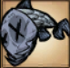

A Fishing Rod is a Survival Item used to catch Fish or Eels at a Pond.
It requires 2 Twigs and 2 Silk to craft and a Science Machine to prototype.
The Fishing Rod can be used to catch up to 9 fish/eels before breaking.
Fishing does not count towards Naughtiness, so the player is in no danger from Krampus.
The Fishing Rod can also be used to catch Flotsam from the coast, which returns various resources and Trinkets.
This action also degrades the Fishing Rod.
Swing your rod in order to catch fish
